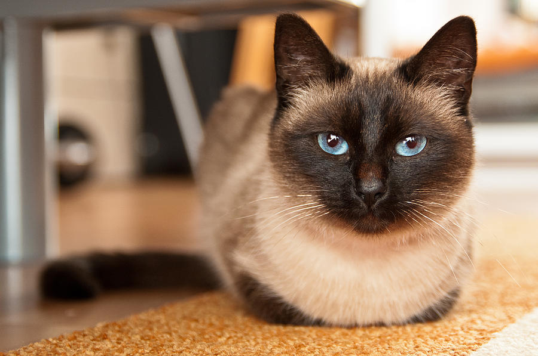

Современная сиамская кошка имеет весьма характерную внешность, отличительными чертами которой являются тонкое, длинное, трубообразное гибкое тело, голова в виде длинного клина, большие миндалевидные косо поставленные глаза ярко-синего цвета, очень большие уши, широкие в основании и заостренные на концах, поставленные таким образом, чтобы между мочкой носа и кончиками ушей образовывался равносторонний треугольник. Шерсть короткая, плотно прилегающая к телу, без подшерстка. Очень длинный хлыстообразный хвост, тонкий от самого основания с заостренным длинным кончиком.
Для сиамских кошек характерен окрас колор-поинт (светлая шерсть с более тёмным окрасом на лапах, морде, ушах и хвосте). Такой окрас — это проявление неполного альбинизма, называемого акромеланизм. Действие акромеланизма связано с температурными особенностями живого организма: в теплых частях тела вырабатывается меньше пигмента, чем в холодных, поэтому уши, лапы, хвост и морда окрашены в более тёмный по сравнению с остальным телом цвет. С возрастом контраст поинтов по сравнению с телом может стать меньше. После года большинство кошек поинтового окраса имеют затемнение по корпусу. Сиамские котята рождаются абсолютно белыми, через несколько дней после рождения начинают темнеть поинты, окончательно окрас устанавливается в 6—10 месяцев.
Активные кошки. Нуждаются во внимании, любят физический контакт. Общительные, ласковые и доверчивые. Кошки из сиамо-ориентальной группы умеют пользоваться своими голосовыми связками, меняя тональность и высоту звука для выражения своих требований и чувств. Легко поддаются дрессировке.